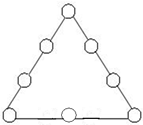
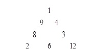
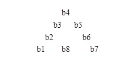

问题描述
人生来就有三个生理周期，分别为体力、感情和智力周期，它们的周期长度为 23 天、28 天和33 天。每一个周期中有一天是高峰。在高峰这天，人会在相应的方面表现出色。例如，智力周期的高峰，人会思维敏捷，精力容易高度集中。因为三个周期的周长不同，所以通常三个周期的高峰不会落在同一天。对于每个人，我们想知道何时三个高峰落在同一天。
对于每个周期，我们会给出从当前年份的第一天开始，到出现高峰的天数（不一定是第一次高峰出现的时间）。你的任务是给定一个从当年第一天开始数的天数，输出从给定时间开始（不包括给定时间）下一次三个高峰落在同一天的时间（距给定时间的天数）。例如：给定时间为10，下次出现三个高峰同天的时间是12，则输出2（注意这里不是3）。
输入数据
输入四个整数：p, e, i 和d。 p, e, i 分别表示体力、情感和智力高峰出现的时间（时间从当年的第一天开始计算）。d 是给定的时间，可能小于p, e, 或 i。 所有给定时间是非负的并且小于365, 所求的时间小于等于21252。
输出要求
从给定时间起，下一次三个高峰同天的时间（距离给定时间的天数）。
输入样例
0 0 0 0
0 0 0 100
5 20 34 325
4 5 6 7
283 102 23 320
-1 -1 -1 -1
输出样例
Case 1: the next triple peak occurs in 21252 days.
Case 2: the next triple peak occurs in 21152 days.
Case 3: the next triple peak occurs in 19575 days.
Case 4: the next triple peak occurs in 16994 days.
Case 5: the next triple peak occurs in 8910 days.
假设从当年的第一天开始数，第k 天时三个高峰同时出现。符合问题要求的k必须大于d、小于等于21252（23×28×33），并满足下列三个条件：
1）(k-p) % 23 == 0
2）(k-e) % 28 == 0
3）(k-i) % 33 == 0
对区间[d+1，21252]中的每个k都进行三个条件的判断，若同时满足三个条件，则k就是所求。
#include <stdio.h>
int main()
{
int p,e,i,d,caseNo = 0,k;
while(scanf("%d%d%d%d",&p,&e,&i,&d) &&p!=-1)
{
++caseNo;
for(k = d+1;(k-p)%23!=0 || (k-e)%28!=0|| (k-i)%33!=0; k++);
printf("Case %d: the next triple peak occurs in %d days.\n",caseNo,k-d);
}
return 0;
}
思路1中对区间[d+1，21252]中的每个k都进行三个条件的判断，开销很大，可以进行优化。
具体优化办法是：先从区间[d+1，21252]中找到第一个满足条件1）的体力高峰出现的时间k1，然后从k1、k1+23、k1+2*23、k1+3*23…这些时间中寻找第一个满足条件2）的情感高峰出现的时间k2，当然它也一定是体力高峰出现的时间；最后在k2、k2+23*28、k1+2*23*28、k1+3*23*28…这些时间中寻找第一个满足条件3）的时间k3。则k3-d就是所求的答案。
#include <stdio.h>
int main()
{
int p,e,i,d,caseNo = 0,k;
while(scanf("%d%d%d%d",&p,&e,&i,&d) &&p!=-1)
{
++caseNo;
for(k = d+1;(k-p)%23;k++); // 枚举体力高峰
while ((k-e)%28!=0) k+=23; // 枚举情感高峰
while ((k-i)%33!=0) k+=23*28; // 找到三高峰
printf("Case %d: the next triple peak occurs in %d days.\n",caseNo,k-d);
}
return 0;
}
问题描述
有50枚硬币，可能包括4种类型：1元、5角、1角和5分。
已知50枚硬币的总价值为20元，求各种硬币的数量。
例如：2、34、6、8就是一种方案。而2、33、15、0是另一个可能的方案，显然方案不唯一。
编写程序求出类似这样的不同的方案一共有多少种？
输入数据
无
输出要求
所有可能的方案，输出格式见输出样例。
输入样例
无输入
输出样例
1: 0 , 38 , 8 , 4
2: 1 , 36 , 7 , 6
3: 2 , 33 , 15 , 0
……
（1）编程思路。
直接对四种类型的硬币的个数进行穷举。其中，1元最多20枚、5角最多40枚、1角最多50枚、5分最多50枚。
另外，如果以元为单位，则5角、1角、5分会化成浮点型数据，容易计算出错。可以将1元、5角、1角、5分变成100分、50分、10分和5分，从而全部采用整型数据处理。
（2）源程序。
#include <stdio.h>
int main()
{
int a,b,c,d,cnt=0;
for(a=0;a<=20;a++)
for(b=0;b<=40;b++)
for(c=0;c<=50;c++)
for(d=0;d<=50;d++)
{
if(a*100+b*50+c*10+d*5==2000 && a+b+c+d==50)
{
printf("%d: %d , %d , %d , %d\n",++cnt,a,b,c,d);
}
}
return 0;
}
（3）穷举优化。
上面的程序采用穷举法求解，比较简单。但在穷举结构的设置、穷举参数的选取等方面存在着改进与优化的空间。
一般来说，在采用穷举法进行问题求解时，可从两个方面来优化考虑。
1）建立简洁的数学模型。
数学模型中变量的数量要尽量少，它们之间相互独立。这样问题解的搜索空间的维度就小。反应到程序代码中，循环嵌套的层次就少。例如，上面的程序中，采用变量a、b、c、d分别表示1元、5角、1角和5分硬币的枚数，对这4个变量穷举，循环层次为4层。实际上这4个变量彼此间有两个条件在约束，或者枚数等于50，或者总价值为20元。因此，可以只穷举3个变量，另外一个变量通过约束条件求出，从而将循环层次减少为3层。
2）减小搜索的空间。
利用已有的知识，缩小数学模型中各个变量的取值范围，避免不必要的计算。反应到程序代码中，循环体被执行的次数就减少。例如，在穷举时，先考虑1元的枚数a，最多为20枚（即0<=a<=20），再考虑5角的枚数b，若采用总价值不超过20元约束，则其枚数最多为(2000-a*100)/50枚（即0<=b<=(2000-a*100)/50），之后考虑1角的枚数c，其枚数最多为 (2000-a*100-b*50)/10（即0<=c<=(2000-a*100-b*50)/10）。这样穷举的循环次数会大大减少。
采用上述思路优化后的源程序如下。
#include <stdio.h>
int main()
{
int a,b,c,d,cnt=0;
for(a=0;a<=20;a++)
for(b=0;b<=(2000-a*100)/50;b++)
for(c=0;c<=(2000-a*100-b*50)/10;c++)
{
d=(2000-a*100-b*50-c*10)/5; // 剩下的用5分硬币填充
if(a+b+c+d==50)
{
printf("%d: %d , %d , %d , %d\n",++cnt,a,b,c,d);
}
}
return 0;
}
也可以采用总枚数不超过50枚约束。先考虑1元的枚数a，最多为20枚（即0<=a<=20），再考虑5角的枚数b，则其枚数最多为(50-a)枚（即0<=b<=(50-a），之后考虑1角的枚数c，其枚数最多为 (50-a-b)枚（即0<=c<=50-a-b）。采用这种思路优化后的源程序如下。
#include <stdio.h>
int main()
{
int a,b,c,d,cnt=0;
for(a=0;a<=20;a++)
for(b=0;b<=50-a;b++)
for(c=0;c<=50-a-b;c++)
{
d=50-a-b-c; // 剩下的用5分硬币填充
if(100*a+50*b+10*c+5*d==2000)
{
printf("%d: %d , %d , %d , %d\n",++cnt,a,b,c,d);
}
}
return 0;
}
问题描述
把和为正整数s的8个互不相等的正整数填入8数字三角形（如图1所示）中，若三角形三边上的数字之和相等且三边上的数字之积也相等，该三角形称为和积三角形。

图1 数字三角形
例如，和为45的和积三角形如图2所示。

图2 s=45的和积三角形
编写一个程序，输出和为s的和积三角形。
输入数据
一个正整数S（36≤S≤300）。
输出要求
所有和为S的和积三角形，要求输出的方案不重复。如图2中，8和9交换，或4和3交换，或同时交换9与4、8和3、2和12，所得到的3种方案均视为与图2给出的方案是同一种方案。
输入样例
45
输出样例
1：2 , 8 , 9 , 1 , 4 , 3 , 12 , 6 , s1=20, s2=144
说明
对照图2的数据，注意体会样例中8个数的输出顺序，另外是s1的值代表各边上整数的和，s2的值代表各边上整数的积。
（1）编程思路。
按输出样例的说明，设图1所示的数字三角形的8个数分布如下图3所示。
因为三角形的两个腰可以互相交换，为避免重复，不妨约定三角形中数字“下小上大、左小右大”，即 b1<b7、b2<b3且b6<b5。

图3 三角形分布示意图
这样，可以根据约定对b1、b7的值进行循环探索，设置：
b1的取值范围为1 ~ (s-21)/2； （因除b1、b7外，其他6个数之和至少为21）
b7的取值范围为b1+1 ~ (s-28)； （因除b7外，其他7个数之和至少为28）
b4的取值范围为1 ~ (s-28)； （因除b4外，其他7个数之和至少为28）
同理，根据约定b2<b3，b6<b5，可设置：
b2 的取值范围为1 ~ (s-21)/2； （因除b2、b3外，其他6个数之和至少为21）
b3 的取值范围为b2+1 ~ (s-28)；
b6 的取值范围为1 ~ (s-21)/2； （因除b5、b6外，其他6个数之和至少为21）
b5 的取值范围为b(6)+1 ~ (s-28)；
b8 = s-（b1+b2+b3+b4+b5+b6+b7）
对所取的8个整数，需要进行以下4道检测：
1）若b8<=0，则不符合要求；
2）若这8个数出现相同数，则不符合要求；
3）若三边之和不等，则不符合要求；
4）若三边之积不等，则不符合要求。
若某8个数通过以上4道检测，即为一个解，打印输出，并统计解的个数。
由于需要对8个整数中是否出现相同数进行检测，因此可以将8个数保存在一个一维数组中，定义一维数组 int b[9]；其中数组元素b[1] ~ b[8]分别对应图3中的b1 ~ b8。
程序总体可以写成一个七重循环结构，如下：
for(b[1]=1;b[1]<=(s-21)/2;b[1]++)
for(b[7]=b[1]+1;b[7]<=s-28;b[7]++)
for(b[4]=1;b[4]<=s-28;b[4]++)
for(b[2]=1;b[2]<=(s-21)/2;b[2]++)
for(b[3]=b[2]+1;b[3]<=s-28;b[3]++)
for(b[6]=1;b[6]<=(s-21)/2;b[6]++)
for(b[5]=b[6]+1;b[5]<=s-28;b[5]++)
{
根据穷举的8个数，进行4道检测，确定是否为一组解；
}
4道检测中，除检查8个数中是否出现相同数复杂点外，其他均是简单计算并判断即可。
为检测8个数中是否出现相同的数，可以先设定一个标志 t=0；然后用循环依次将每个数与其后的每个数进行比较，若出现相同，则置t=1并退出循环。
循环执行结束后，若 t==1，则说明8个数中出现了相同的数；若 t保持初始设定值0，则说明8个数中不存在相同的数。算法描述为：
t=0;
for(i=1;i<=7;i++)
for(j=i+1;j<=8;j++)
if(b[i]==b[j])
{
t=1; i=7; break;
}
（2）源程序1。
#include <stdio.h>
int main()
{
int i,j,t,s,s1,s2,cnt,b[9];
scanf("%d",&s);
cnt=0;
for(b[1]=1;b[1]<=(s-21)/2;b[1]++)
for(b[7]=b[1]+1;b[7]<=s-28;b[7]++)
for(b[4]=1;b[4]<=s-28;b[4]++)
for(b[2]=1;b[2]<=(s-21)/2;b[2]++)
for(b[3]=b[2]+1;b[3]<=s-28;b[3]++)
for(b[6]=1;b[6]<=(s-21)/2;b[6]++)
for(b[5]=b[6]+1;b[5]<=s-28;b[5]++)
{
b[8]= s-(b[1]+b[2]+b[3]+b[4]+b[5]+b[6]+b[7]);
if(b[8]<=0) continue;
t=0;
for(i=1;i<=7;i++)
for(j=i+1;j<=8;j++)
if(b[i]==b[j])
{ t=1; i=7; break; }
if(t==1) continue;
s1= b[1]+b[2]+b[3]+b[4];
if(b[4]+b[5]+b[6]+b[7]!=s1 || b[1]+b[8]+b[7]!=s1)
continue;
s2=b[1]*b[2]*b[3]*b[4];
if(b[4]*b[5]*b[6]*b[7]!=s2 || b[1]*b[8]*b[7]!=s2)
continue;
cnt++;
printf("%d : ",cnt);
for(i=1; i<=8; i++)
printf("%d , ",b[i]);
printf(" s1=%d, s2=%d\n",s1,s2);
}
return 0;
}
（3）穷举优化思路。
上面的穷举程序设计虽然可行。但是，这个程序的运行速度太慢。例如将程序中的s=45改成s=89，即计算和为89的8个整数组成的和积三角形，程序运行后，可得到如下所示的结果。
1 : 6 , 14 , 18 , 1 , 9 , 8 , 21 , 12 , s1=39, s2=1512
2 : 8 , 12 , 15 , 1 , 16 , 9 , 10 , 18 , s1=36, s2=1440
3 : 8 , 4 , 27 , 2 , 12 , 3 , 24 , 9 , s1=41, s2=1728
4 : 15 , 9 , 16 , 1 , 12 , 10 , 18 , 8 , s1=41, s2=2160
程序得到以上4个解需等待较长时间。为了提高求解效率，必须对程序进行优化，可以从循环设置入手。具体思路为：
1）增加s+b1+b7+b4是否为3的倍数检测。
因为三角形三个顶点的元素在计算三边时各计算了两次，即s+b1+b7+b4＝3*s1，则在b1、b4、b7循环中增加对s+b1+b7+b4是否能被3整除的检测。
若（s+b1+b7+b4）%3≠0，则直接continue，继续新的b1、b4、b7探索，而无需探索后面的b2、b3、b5和b6；
否则，记s1=（s+b1+b7+b4）/3，往下进行探索。
2）精简循环，把七重循环精简为五重。
保留根据约定对b1、b7和b4的值进行的循环探索，设置同前。优化对b2、b3、b5和b6的循环探索。可根据约定对b3、b5的值进行探索，设置：
b3的取值范围为（s1-b1-b4）/2+1 ~ s1-b1-b4； 注： s1=（s+b1+b7+b4）/3
b5的取值范围为（s1-b4-b7）/2+1 ~ s1-b4-b7；
同时根据各边之和为s1，计算出b2、b6和b8，即
b2=s1-b1-b4-b3
b6=s1-b4-b5-b7
b8=s1-b1-b7
这样，还同时精简了关于b8是否为正的检测，也精简了三边和是否相等的检测。只需检测b数组是否存在相同正整数与三边积是否相同即可。
（4）改进后的源程序。
#include <stdio.h>
int main()
{
int i,j,t,s,s1,s2,cnt,b[9];
scanf("%d",&s);
cnt=0;
for(b[1]=1;b[1]<=(s-21)/2;b[1]++)
for(b[7]=b[1]+1;b[7]<=s-28;b[7]++)
for(b[4]=1;b[4]<=s-28;b[4]++)
{
if((s+b[1]+b[4]+b[7])%3!=0)
continue;
s1=(s+b[1]+b[4]+b[7])/3;
for(b[3]=(s1-b[1]-b[4])/2+1;b[3]<s1-b[1]-b[4];b[3]++)
for(b[5]=(s1-b[4]-b[7])/2+1;b[5]<s1-b[4]-b[7];b[5]++)
{
b[2]=s1-b[1]-b[4]-b[3];
b[6]=s1-b[4]-b[7]-b[5];
b[8]=s1-b[1]-b[7];
t=0;
for (i=1; i<=7; i++)
for(j=i+1;j<=8;j++)
if(b[i]==b[j])
{ t=1; i=7; break; }
if(t==1) continue;
s2=b[1]*b[2]*b[3]*b[4];
if(b[4]*b[5]*b[6]*b[7]!=s2 || b[1]*b[8]*b[7]!=s2)
continue;
cnt++;
printf("%d : ",cnt);
for(i=1; i<=8; i++)
printf("%d , ",b[i]);
printf(" s1=%d, s2=%d\n",s1,s2);
}
}
return 0;
}
运行以上改进穷举的程序，当s=89时所得解与前相同，但时间大大缩短。
问题描述
把数字1、2、…、9这9个数字填入以下含加减乘除与乘方的综合运算式中的9个□中，使得该式成立
□^□+□□÷□□-□□×□=0
要求数字1，2，…、9这9个数字在式中都出现一次且只出现一次。
输入数据
无
输出要求
输出所有可能的填写方式，输出格式见输出样例。
输入样例
无
输出样例
1:3 ^ 5 + 87 / 29 - 41 * 6=0
……
（1）编程思路1。
设式中的6个整数从左至右分别为 a、b、x、y、z、c，其中x、y、z为2位整数，范围为12~98；a、b、c为一位整数，范围为1~9。
设置a、b、c、x、y、z循环，对穷举的每一组a、b、c、x、y、z，进行以下检测：
1）若x不是y的倍数，即 x % y!=0，则返回继续下一次穷举。
2）若等式不成立，即a^b+x/y-z*c!=0，则返回继续下一次穷举。
3）式中9个数字是否存在相同数字。将式中6个整数共9个数字进行分离，分别赋值给数组元素f[1]~f[9]。连同附加的f[0]=0（为保证9个数字均不为0），共10个数字在二重循环中逐个比较。
若存在相同数字，t=1，不是解，继续下一次穷举。
若不存在相同数字，即式中9个数字为1~9不重复，保持标记t=0, 是一组解，输出所得的完美运算式。并统计解的个数 n 。
（2）源程序1。
#include <stdio.h>
int main()
{
int a,b,c,x,y,z;
int i,j,k,t,n,f[10];
n=0;
for(a=1;a<=9;a++)
for(b=1;b<=9;b++)
for(c=1;c<=9;c++)
for(x=12;x<=98;x++)
for(y=12;y<=98;y++)
for(z=12;z<=98;z++)
{
if (x%y!=0) continue;
k=1;
for (i=1;i<=b;i++) // 计算k=a^b
k=a*k;
if(k+x/y-z*c!=0) continue;
f[0]=0;
f[1]=a;f[2]=b;f[3]=c; // 9数字个赋给f数组
f[4]=x/10; f[5]=x%10;
f[6]=y/10; f[7]=y%10;
f[8]=z/10; f[9]=z%10;
t=0;
for(i=0;i<=8;i++)
for(j=i+1;j<=9;j++)
if(f[i]==f[j])
{ t=1; break; } // 检验数字是否有重复
if(t==0)
{
n++; // 输出一个解，用n统计个数
printf("%d:%d ^ %d + %d / %d - %d * %d=0\n",n,a,b,x,y,z,c);
}
}
return 0;
}
（3）编程思路2。
对上面的程序进行优化。
由于要求的综合运算式为：a^b+x/y-z*c=0，那么，x=(z*c-a^b)*y。因此可设置a、b、c、y、z循环，对穷举的每一组a、b、c、y、z，计算x。这样处理，可省略x循环，同时省略x是否能被y整除，省略等式是否成立的检测。
计算x后，只要检测x是否为二位数即可。若计算所得x不是二位整数，则返回继续下一次穷举。
另外，式中9个数字是否存在相同数字可采用这样的方法：
定义f数组对6个整数分离出的9个数字的出现次数进行统计，即f[i]的值为式中数字i的个数，初值全赋值为0。统计后，若某一f[i]（i=1~9）不为1，则一定不满足数字1、2、…、9这九个数字都出现一次且只出现一次，标记t=1，不是解，返回继续下一次穷举；若所有f[i]全为1，满足数字1、2、…、9这九个数字都出现一次且只出现一次，保持标记t=0，是解，输出所得的完美综合运算式。
（4）源程序2。
#include <stdio.h>
int main()
{
int a,b,c,x,y,z;
int i,k,t,n,f[10];
n=0;
for(a=1;a<=9;a++)
for(b=1;b<=9;b++)
for(c=1;c<=9;c++)
for(y=12;y<=98;y++)
for(z=12;z<=98;z++)
{
k=1;
for (i=1;i<=b;i++)
k=a*k;
x=(z*c-k)*y;
if(x<10 || x>98) continue;
for(i=1;i<=9;i++)
f[i]=0;
f[a]++; f[b]++; f[c]++; // 记录9个数字各自出现的次数
f[x/10]++; f[x%10]++; f[y/10]++; f[y%10]++;
f[z/10]++; f[z%10]++;
t=0;
for(i=1;i<=9;i++)
if(f[i]!=1)
{ t=1; break; } // 检验数字是否有重复
if(t==0)
{
n++;
printf("%d:%d ^ %d + %d / %d - %d * %d=0\n",n,a,b,x,y,z,c);
}
}
return 0;
}